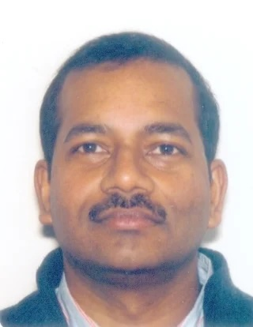

Intelligent Systems Research Centre
Ulster University (Derry~Londonderry Campus)
Seminar Series
Seminars usually take place from 12.30-1.30pm on Wednesdays in person the MS building board room (MS105) and/or streamed online via Microsoft Teams. Contact Cian O'Donnell or Louise Gallagher for more information.
Seminar archives: 2024/25, 2023/24, 2022/23.
Autumn 2025
08/10/25: 2x ISRC speakers
MS Teams link for seminarRavi Jha (ISRC, UU)

Google Scholar
Title TBC
Abstract TBC
Speaker TBC
In-person seminar.22/10/25: Raymond Bond (School of Computing, Ulster University Belfast)
MS Teams link for seminar
Webpage
Google Scholar
AI and Digital Health
Abstract TBC.
11/11/25: AICC speakers
MS Teams link for seminarWebpage
The Artificial Intelligence Collaboration Centre (AICC), a £16.3 million initiative by Ulster University and Queen’s University Belfast, promotes AI awareness and adoption among businesses in Northern Ireland, with a strong emphasis on ethical and responsible innovation.
Title TBC
Abstract TBC.
19/11/25: Pratheep Yogarajah (ISRC, Ulster University)
MS Teams link for seminar
Webpage
Google Scholar
Pratheepan Yogarajah has been a Lecturer in Computing Science at the Ulster University since January 2016. He joined the School of Computing and Intelligent System at Ulster University as a teaching assistant in September 2007. He also worked for over five years as a Research Associate at Ulster University. Previously he worked in Sri Lanka in excess of five years, first as an Assistant Lecturer in Computer Science and then as a Lecturer in Computer Science.
Title TBC
Abstract TBC.
01/12/25: Laura Grima (Janelia Research Campus, USA)
MS Teams link for seminar
Webpage
Google Scholar
I'm a systems neuroscientist who uses a behaviour-first approach to understand how the brain can learn from and exploit complex, changing environments. I believe that the study of naturalistic behaviours such as foraging can allow greater insight into the neural mechanisms that have evolved to support flexible higher order cognitive processes such as decision-making, planning, and memory. As part of this interest I co-organise an online seminar series, the Future of Foraging.
I'm currently a Research Scientist in the Dudman lab at HHMI's Janelia Research Campus in Virginia. In my current research I'm using fibre photometry to record dopamine in the striatum as naive mice learn about many changing options in a large arena. Before moving to the U.S., I completed a D.Phil. in the Walton and Husain labs at the University of Oxford. During my D.Phil. I trained rats to make or withhold movement to understand the relationship between ventral striatal dopamine release and motivated action.
Title TBC
Abstract TBC.